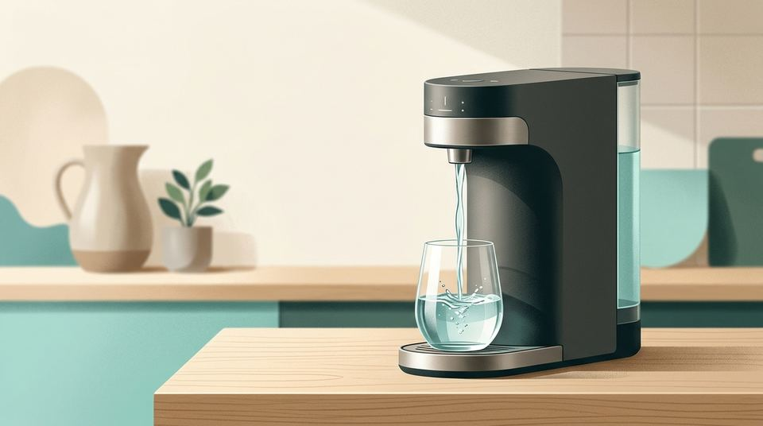

Whole-House Carbon Filter vs. Under-Sink RO: Chlorine, Fluoride & Total Cost (2026)
Compare point-of-entry whole-house carbon tanks and under-sink reverse osmosis on fluoride, chlorine, wastewater ratio, and 3-year maintenance cost.

Top Recommended Option
Waterdrop RO & Water Filtration Systems
Whole-house activated carbon tanks and under-sink reverse osmosis (RO) units solve different water-quality problems. A point-of-entry carbon filter treats every tap and shower in the home—removing chlorine, chloramine taste, and volatile organic compounds with minimal pressure drop—while leaving dissolved minerals intact and producing zero wastewater.
Under-sink RO forces drinking water through a 0.0001-micron semipermeable membrane that blocks up to 95% of fluoride, dissolved salts, nitrates, and PFAS, compared with 10% to 30% fluoride reduction from carbon alone. Because RO systems reject 3 to 4 gallons of concentrate per gallon of purified water on older tank designs (and 1:1 to 1:2 on modern tankless units), sizing RO for drinking and cooking rather than whole-house plumbing keeps installation costs around $300–$700 instead of $1,000–$7,500.
For most municipal homes, the highest-value combination is a single point-of-entry carbon tank ($600–$1,200 installed) paired with an under-sink tankless RO faucet in the kitchen. Replace carbon media every 6 to 12 months and swap RO membranes every 2 to 3 years to maintain rated flow and contaminant rejection.